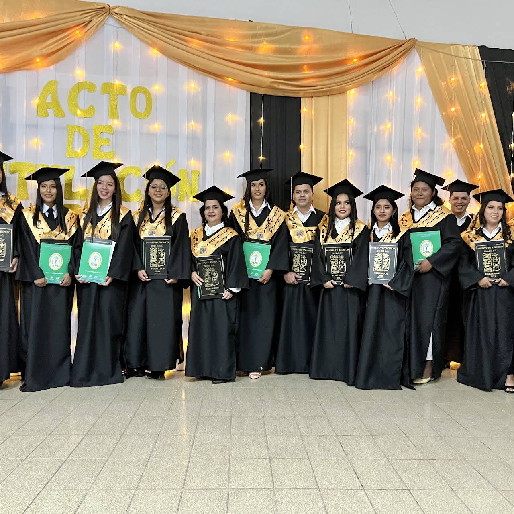

INCOS es un centro estatal donde puedes estudiar carreras a Nivel Técnico Superior:
- * Administración de Empresas
- * Contaduría General
- * Sistemas Informáticos
MISION
Formar profesionales a nivel de Educación Superior en el campo Técnico Tecnológico críticos, reflexivos, propositivos, emprendedores y de excelencia académica con programas articulados a la dinámica productiva y con una gestión institucional comunitaria que contribuya al desarrollo socio-productivo y empresarial de Santa Cruz y de Bolivia.
VISION
INCOS Santa Cruz es un centro de formacion de excelencia que contribuye al desarrollo de la ciencia y tecnologia con una visión holística intracultural e intercultural con emprendimientos socio-productivos y empresariales acordes a las necesidades, potencialidades y vocaciones productivas de la región con la perspectiva de alcanzar una sociedad del Vivir Bien en la Región y el País.
NUESTRA HISTORIA
El Instituto Comercial Superior de la Nación INCOS Santa Cruz, fue fundado el 2 de agosto de 1985 mediante la Resolución Ministerial 746/1985, actualmente cuenta con la R.M. 0426/2016, ofertando las Carreras de Contaduría General, y Secretariado Ejecutivo, posteriormente en el año 1988 se amplían las carreras de Administración de Empresas e Informática.
El Instituto INCOS Santa Cruz está ubicado en Calle Ñuflo de Chavez Nº 62, entre René Moreno y Calle Chuquisaca dentro del centro histórico del municipio de Santa Cruz de la Sierra. Presta sus servicios educativos en el turno de la tarde de 14:00pm a 16:30pm de lunes a viernes y en el turno de la noche de 18:45 pm a 22:30pm. de lunes a viernes más sábado de 17:00 a 21:00.
PERSONAL ADMINISTRATIVO DEL INSTITUTO TÉCNICO INCOS SANTA CRUZ
- Miriam Fernández Colque
Directora Administrativa - Argentina Caballero Chávez
Rectora - Victor Hugo Bejarano Rendón
Director Académico - Liliana Eguez Aparicio
Secretaria - Elizabeth Yolanda Alba Ortuño
Portera
DOCENTES DEL INSTITUTO TECNICO INCOS SANTA CRUZ
Contaduría General
- Barriga Salgero Hilda
- Fernandez Vaca Wilma
- Ferrufino Camacho Manuel
- Hurtado Daza Aurelio
- Icuña Soto Gonzalo
- Mamani LLanque Marcos
- Moron Farel Georgina
- Osinaga Cabrera Jose
- Paraguayo Colque Teodora
- Robles Dory Olga
- Rodriguez Cuellar Patricia
- Sarzuri Poma Elias
- Vargas Morales Sebastian
- Vara Coronado Jose
Sistemas Informáticos
- Arenas Jerez Lily
- Camacho Robles Ybeth Maura
- Fernandez Hinojosa Giovanna
- Justiniano Siles Silvia Roxana
- Fernandez Arambulo Yesmani
- Ticlla Choque Magali
- Vargas Rosas Waly Yuryi
Administración de Empresas
- Carrizales Castellon Sonia Sara
- Marca Arroyo Vladimir
- Mariaca Hurtado Claudia Paola
- Montenegro Oyola Jose Luis
- Montero Aguilar Rafael
- Roca Rios Rene Benjamin
- Uribe Mejia Jose Luis
Ubicación
.png) Calle Ñuflo de Chavez No 82, entre René Moreno y Chuquisaca
Calle Ñuflo de Chavez No 82, entre René Moreno y Chuquisaca
Oficina: 3363719
 info@incos-santacruz.edu.bo
info@incos-santacruz.edu.bo